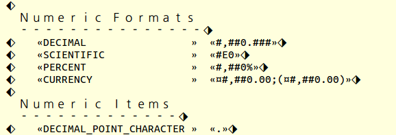
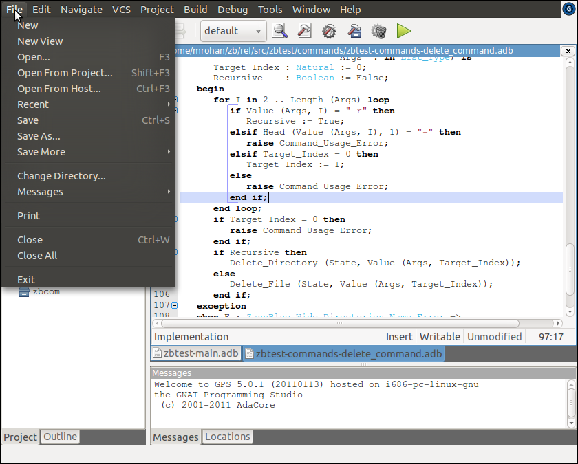
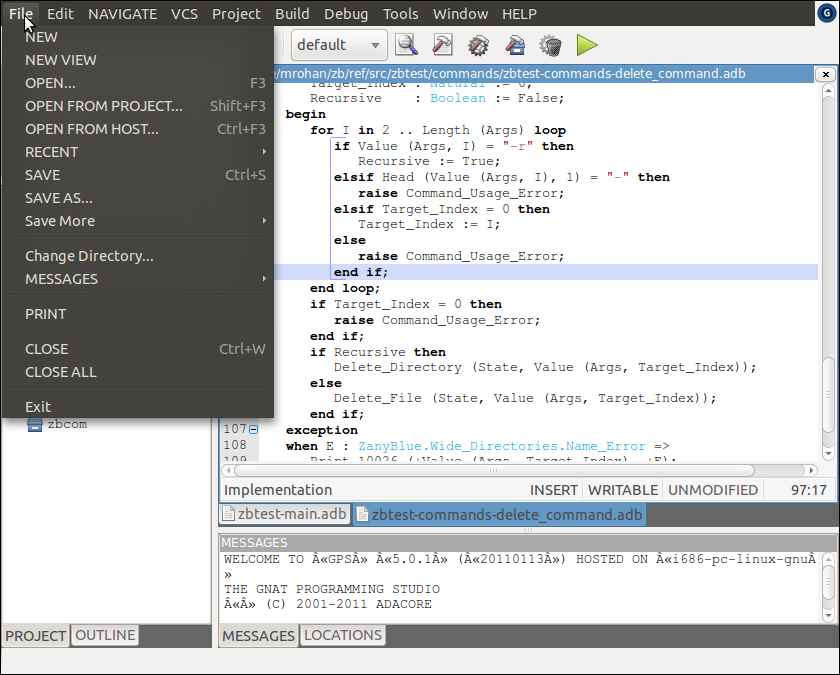
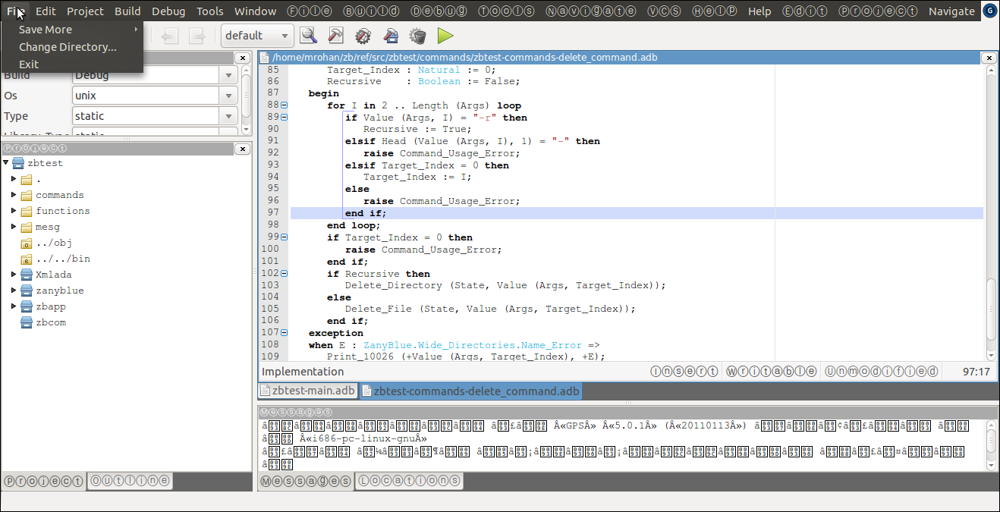

Pseudo Translations¶
One of the easiest mistakes to make with an internationalize application is
to include hard-coded strings, i.e., not externalize the message text into
a .properties file. One technique to detect hard-coded strings
is to generate a pseudo translation in a test locale and test the application.
This requires “translation” of a .properties file into a pseudo
locale (the choice is normally Swahili in Kenya, i.e., sw_KE) and
rebuild of a test application with the pseudo translations included.
ZanyBlue adopts a different approach and includes psuedo translation as part of the library rather than an after the fact exercise. The pseudo translation support built into the library support the translation of messages using simple wide character to wide character replacement, e.g., replace all ASCII character with their uppercase equivalents. Each message is further highlighted using start and end of message marker characters, the left and right diamond characters. Additionally, embedded arguments are surrounded by French quote characters.
To enable the built-in pseudo translations, the catalogs procedure
procedure Enable_Pseudo_Translations (Catalog : Catalog_Type;
Mapping : Pseudo_Map_Vector);
can be used. The Mapping argument gives the character to character
mapping that should be used in addition to the message and argument marking
of the pseudo translation.
The mappings defined by the ZanyBlue library are:
Null_Mapwhich preserves the message text but includes the start and end of messages and arguments.Uppercase_Mapin addition to the start and end markers for messages and arguments, convert the message text to upper case (applies only to ASCII characters).Lowercase_Mapin addition to the start and end markers for messages and arguments, convert the message text to lower case (applies only to ASCII characters).Halfwidth_Forms_Mapin addition to the start and end markers for messages and arguments, convert the message text to the halfwidth forms for Latin alphabetic and numeric characters.Enclosed_Alphanumeric_Mapin addition to the start and end markers for messages and arguments, convert the message text to the enclosed alphanumeric forms for Latin alphabetic characters.
Note: The halfwidth forms and enclosed alphanumeric mappings require the appropriate fonts be installed.
In addition to changing the characters used for the message, the Unicode
character Diamond with left half black (U+2816) is prefixed and Diamond
with right half black is suffixed. This allow the visual determination
of where message strings begin and end. A relatively common programming
error is to generate a message by concatenate a set of sub-messages. This
is apparent in a psuedo translated view of the application.
Normal argument handling occurs for pseudo translated messages and the
values are substituted into the message string. The text of the values are
not modified by psuedo translation. Value are, however, delimited by
French quotes (guillemets, chevrons). The following figure
shows the output of the texttt{zbinfo} example application with
half width psuedo translation enabled. As can be seen from the message
delimiters, the header Numeric Formats is a multi-line messages and
is displayed using the half width font. The Decimal, Scientific, etc,
values are formatted arguments (as can be seen from the chevrons surrounding
the values and are not displayed using the half width font.

The example applications support pseudo translation via the verb|-x| options.
The GPS example patches enable pseudo translation for GPS via the command
line options --pseudo= val, where val is one of u (upper),
l (lower), h (halfwidth) and e (enclosed). When halfwidth or
enclosed mappings are used, the linkage between the standard menu item
names and the localized names is lost and additional menu items are created.
The following figures show screenshots of a patched GPS:


